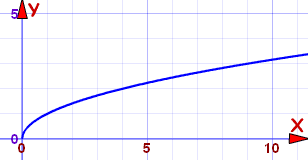
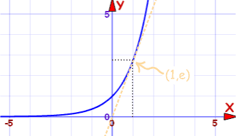
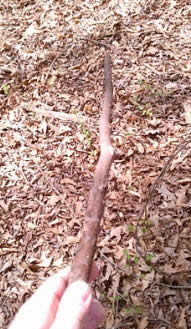
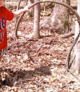
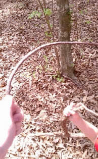
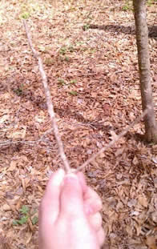

Finding Graphs of Functions in Nature
Go find functions in nature, and photograph them!
Studying Graphs of Functions?
Well, some graphs of functions appear a lot, so knowing their shapes gives you a much better shot at graphing them correctly and catching common errors.
What do you need?
- Either a graphing calculator, or a printout of the graphs of functions
- A park or nature trail with plenty of trees or backyard
- A camera
- A keen eye for natural (not human made) shapes
Here are a few examples:
|
f(x) = mx + b |
f(x) = 1/x |
|
f(x) = x2 |
 f(x) = √x |
|
f(x) = |x| |

f(x) = ex |


And here are some example photos we took to give you an idea:
Graph of f(x) = mx + b
The graph of f(x) = mx+b is a straight line, thus you are looking for something in nature that resembles a straight line. For example:

TAKE A PIC!
Graph of f(x) = x2 or -x2
The graph of f(x) = x2 looks like a U, and -x2 is like a ∩, thus you are looking for something that resembles a U or ∩. For example:

TAKE A PIC!
Graph of Square Root: f(x) = √x
The graph of f(x) = √x looks something like the lower case letter r, for example:

TAKE A PIC!
Graph of Absolute Value: f(x) = |x|
The graph of f(x) = |x| looks some thing like the letter V, for example:

TAKE A PIC!
See what other graphs you can find...
When done, compare your pics of nature to the graphs of functions and put together a presentation.
Activity courtesy of Hands On Math